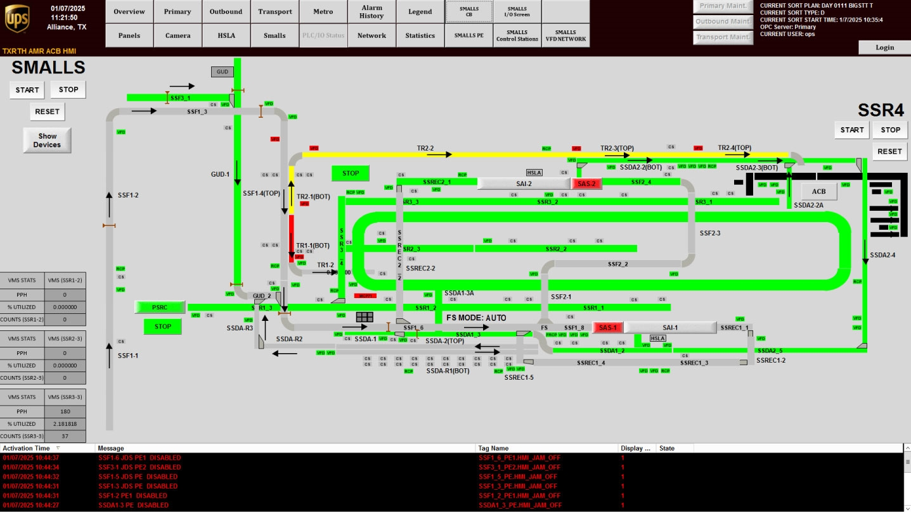

| Procedure ID | proc_check_smalls_system_health_smalls_overview_hmi_v1 |
|---|---|
| Title | Check SMALLS System Health Using the Smalls Overview HMI Screen (Color-Coded Layout) |
| Procedure Type | diagnostic |
| Primary Role | operator |
| Support Safe | Yes |
| Capability Tags | device_roster_state |
| Access Surface | tipper_hmi |
| Audience Roles | operator |
| Failure Pattern Tags | None |
| Validation Status | needs_sme_review |
| Merge Status | source_finalized |
Use the SMALLS overview screen on the System HMI to quickly identify which parts of the SMALLS system are in a normal vs abnormal (color-coded) status based on the system layout.
When you need a fast, at-a-glance health check of the SMALLS system parts using the color-coded SMALLS system layout.

Responsible role: operator
Instruction:
On the System HMI, press the SMALLS button to open the "Smalls" overview screen.
Expected result:
The "Smalls" overview screen is displayed.
Stop or Escalate If:
Responsible role: operator
Instruction:
On the "Smalls" overview screen, review the SMALLS system layout.
Expected result:
You can see the SMALLS system layout with parts displayed for status checking.
Stop or Escalate If:
Responsible role: operator
Instruction:
For each part shown on the layout, observe the color-coded status indicator.
Expected result:
You have identified which parts (if any) show abnormal color-coded status (i.e., not the normal/expected color for that part).
Stop or Escalate If:
Responsible role: operator
Instruction:
Identify any parts whose color-coded status indicates an abnormal condition (i.e., not the normal/expected color for that part). If the layout indicates an offline/blocked section requiring support action, treat it as abnormal.
Expected result:
You have a clear list of abnormal parts (if any) and a decision to escalate when abnormality is widespread or unclear.
Stop or Escalate If: